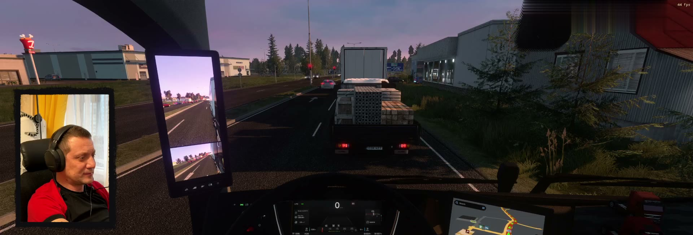
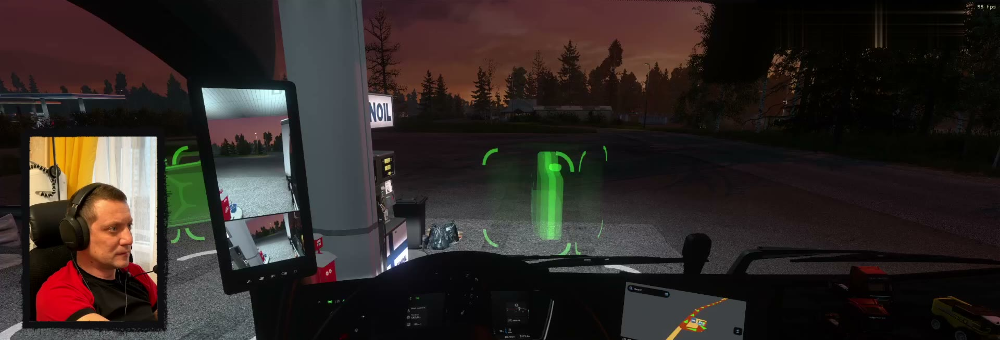

Kanal 15 CB radio
for ETS2
Fictional trucker friends in your cab. Not a mod — it never touches game files. Works fully offline and installs in a couple of minutes.
or message us on Telegram
Drivers start conversations themselves 100% offlineWhat the radio does
You talk — they answer
Hold the push-to-talk key and speak into your mic — drivers answer in character.
Fully offline
Every voice lives on your computer — no internet connection needed.
Not a mod
It never touches game files. A regular companion app for Windows.
How to install
Download
The button above gets you Kanal15-Setup.exe.
Run it
A regular installer: next, next, done.
Windows warns you?
That's SmartScreen: «More info» → «Run anyway». The installer isn't signed with an expensive certificate — the project is made by one person in a garage. Source code is open.
kanal15-publisher
A small personal command-line tool used by the author of Kanal 15 to upload his own gameplay highlight videos from his PC to his own TikTok account via the official TikTok Content Posting API. It uses Login Kit only to authorize the author's own account. It does not interact with any other TikTok users and does not collect any data.
Something to say?
Found a bug, have an idea — or just want to share how it feels on the road? Write me: I read everything myself and answer personally. Bugs get found and fixed from the radio log, no bureaucracy.
This is how it looks
Live radio right in the cab — drivers start conversations themselves and never go quiet for long.

A fuel stop at sunset. Voices live on your computer — no internet needed, everything offline.

The night shoulder. Hold the push-to-talk key and speak — they answer in character.